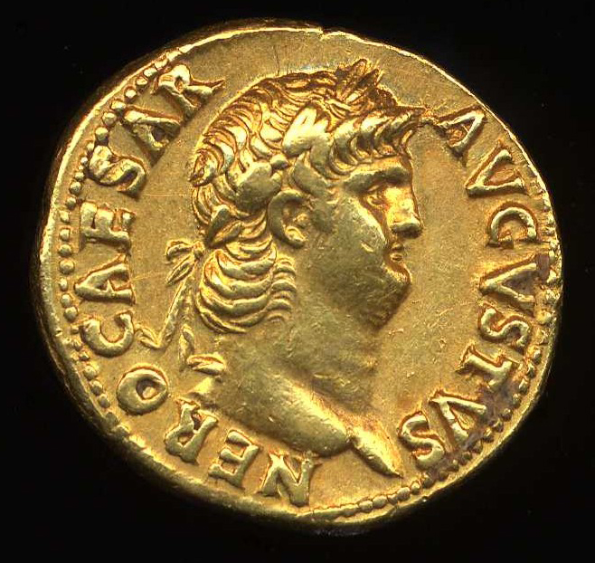
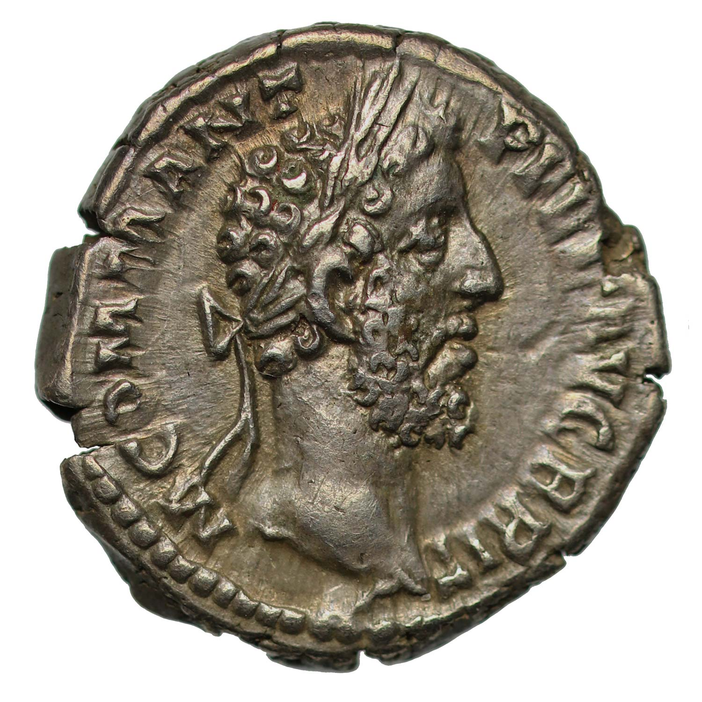
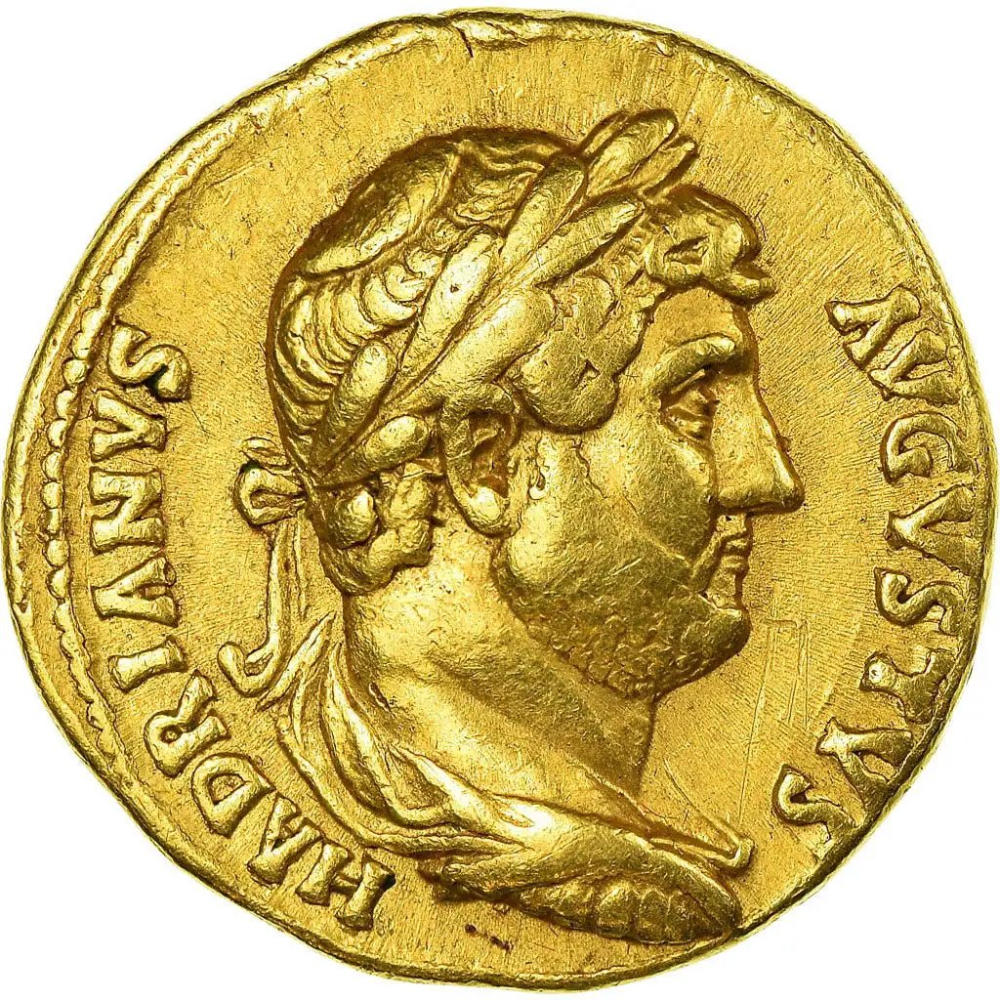
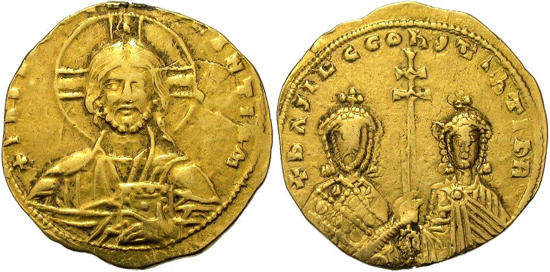

Ars Longa, Vita Brevis
| The table header | |||||||
|---|---|---|---|---|---|---|---|
|  | The Coin of Emperor Nero, reigned in 90 AD |  | Emperor Commodus, known for his administrative reign, began his Emperorship in 177 AD |
 | Emperor Hadrian, famous for the wall that he constructed in Scotland & England, reigned from 117 up until 138 AD
This famous wall, named after him, dictated the border of the Roman Empire on Britannia, which in turn marks roughly the same modern-day borders of Scotland & England.
|
 |
Basil II, known by his title Slayer of the Bulgars, reigned from 976 until 1025.
He is most known for his reconquest of the Balkans, in particular with modern-day Bulgaria.
Basil II is widely regarded as one of the best Byzantine Emperors, due to his orginization and reconquests. Basil the Second |